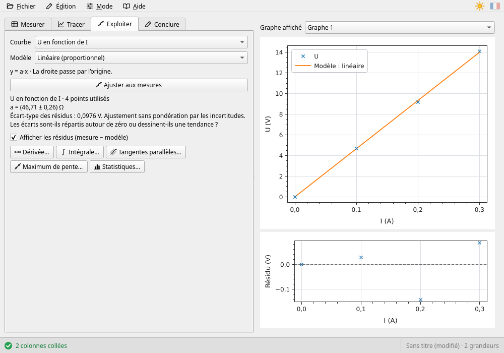
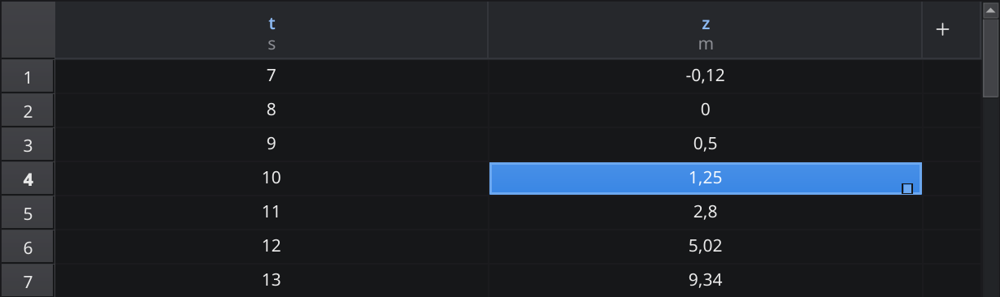
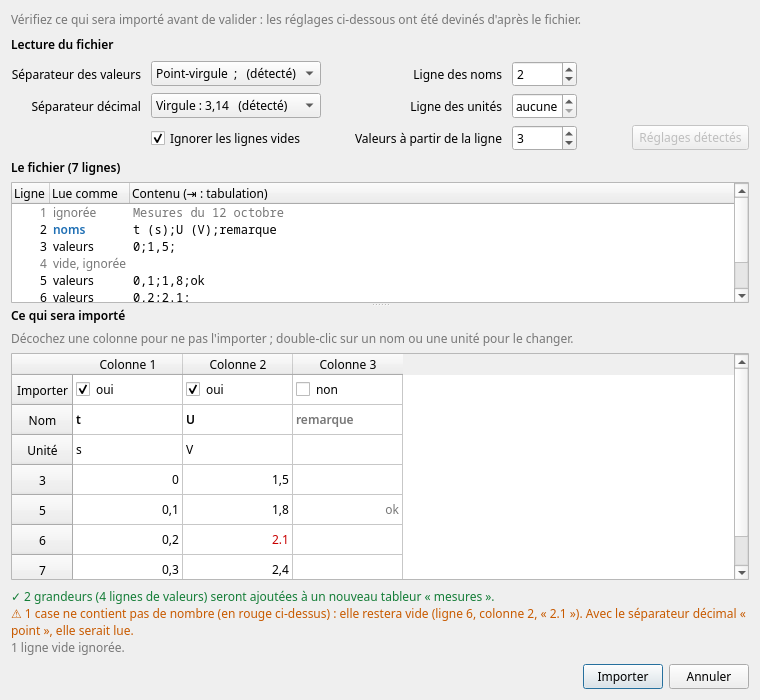

Du relevé de mesures au compte rendu
Une ligne du tableur réunit les lectures d’un même essai. À partir de ces lignes, vous pouvez tester une loi, estimer une incertitude et conserver le raisonnement avec les données.
Premier TP · déterminer une résistance
Quelle résistance rend compte de la tension mesurée aux bornes d’un conducteur ohmique ? Voici un jeu de contrôle idéal. Il permet de vérifier les gestes avant de passer aux mesures du laboratoire.
| Intensité I (A) | Tension U (V) |
|---|---|
| 0,00 | 0,0 |
| 0,10 | 4,7 |
| 0,20 | 9,4 |
| 0,30 | 14,1 |
Fichier de l’expérience
Le fichier porte les symboles et les unités dans ses en-têtes. Vous pouvez l’importer directement ou saisir les quatre couples ci-contre.
Télécharger les mesures (CSV)Mesurer
En mode simplifié, choisissez Nouveau tableur. Créez deux colonnes,
Ien A etUen V. Remplissez chaque ligne avec les deux lectures effectuées ensemble. Si vous avez téléchargé le CSV, utilisez Importer un CSV….Tracer
Dans Tracer, placez
Ien abscisse etUen ordonnée. Cliquez sur Tracer les mesures. Vérifiez la présence des quatre points, dont celui à l’origine.Exploiter
Dans Exploiter, sélectionnez la courbe de U en fonction de I, le modèle Linéaire (proportionnel) et Ajuster aux mesures. L’équation est U = R I. La pente vaut 47 Ω. À 0,30 A, le modèle prévoit bien 14,1 V.
Conclure
Dans Conclure, indiquez la grandeur déterminée, sa valeur avec son unité et l’intervalle étudié. Enregistrez le fichier
.phy. Pour rendre le graphe et la conclusion, ouvrez Compte rendu court….
Comprendre ce que fait l’ajustement
Remplacez maintenant 9,4 par 9,2 V sur la ligne à 0,20 A. La pente devient environ 46,71 Ω. Le modèle prévoit 9,34 V pour cette ligne. La mesure est plus basse d’environ 0,14 V.


Choisir le mode de travail
Le premier démarrage propose le mode simplifié. Ses quatre onglets suivent le déroulement du TP. Dans Exploiter, vérifiez le nom du graphe et celui de la courbe avant chaque analyse, surtout lorsqu’une séance contient plusieurs acquisitions.
Le mode expert donne accès aux paramètres, aux fenêtres indépendantes, aux modèles personnels et à Python. Changez de présentation avec le menu Mode. Vous retrouvez les grandeurs et les graphes de la séance en cours dans les deux modes.
Saisir, relire et corriger au tableur
Le nom identifie la grandeur dans les formules. L’unité figure sous le nom. Une case vide représente une mesure manquante. Saisissez 0 uniquement lorsque cette valeur a été mesurée.


- Ajouter et corriger. Cliquez sur Mesure, nommez la grandeur et renseignez l’unité. Un double-clic sur l’en-tête ouvre ses propriétés. Dans une cellule, Entrée valide et descend, Tab passe à droite et Échap abandonne la saisie en cours.
1,25,1.25et1,25e-3sont acceptés. - Coller des mesures. Sélectionnez la cellule de départ et collez le rectangle avec Ctrl + V. Des en-têtes tels que
t (s)permettent de reprendre les unités. Un texte illisible au milieu de données laisse la case correspondante vide. Une colonne en mV collée sur une colonne en V est signalée. Importez-la séparément pour la convertir. - Créer une suite. Utilisez Remplir… pour une série régulière. Relisez le début, le pas et la dernière valeur. Lors d’un tri, vérifiez quelles lignes vont changer d’ordre afin de garder les mesures associées.
- Projeter le tableur. Dans Édition › Préférences…, essayez la Taille du texte du tableur et la Hauteur minimale des lignes sur l’aperçu. L’Agrandissement de l’interface agit aussi sur les menus et les boutons.
Pour reprendre une opération validée, utilisez Ctrl + Z. Le menu de l’en-tête permet aussi de convertir une mesure en grandeur calculée. Cette conversion remplace le contenu de la colonne et conserve les liens de ses graphes.
Importer un fichier d’acquisition
Déposez le fichier sur la fenêtre ou utilisez Fichier › Importer un fichier CSV…. Lisez une ligne dans le fichier de l’appareil et retrouvez-la dans l’aperçu avant de valider.
- Réglez le séparateur de colonnes et le signe décimal. Avec
0,1;4,7, le point-virgule sépare les deux lectures et la virgule appartient à chaque nombre. - Indiquez la ligne des noms, celle des unités le cas échéant et la première ligne de données. Décochez les commentaires et autres colonnes textuelles.
- Examinez les cellules signalées. Si l’aperçu est cohérent, cliquez sur Importer. Comparez ensuite la première et la dernière mesure à l’original. Réglages détectés restitue la détection initiale.


Passer d’une mesure à un calcul
Une grandeur calculée dépend de ses entrées et se met à jour après une correction. Un paramètre représente une valeur commune à l’expérience, par exemple la masse d’un mobile. En mode expert, créez-le dans Données › Nouveau paramètre….
| Grandeur cherchée | Formule à saisir | Vérification |
|---|---|---|
| Puissance en W | U*I | 14,1 V × 0,30 A donne 4,23 W. |
| Énergie cinétique en J | 0.5*m*v^2 | Avec 2 kg à 3 m/s, on obtient 9 J. |
| Vitesse en m/s | deriv(x,t) | Pour x en m et t en s, un mouvement de 2 m chaque seconde donne 2 m/s. |
| Primitive | integ(v,t) | La primitive prend la valeur zéro au premier point valide. Avec v en m/s et t en s, on obtient un déplacement en m. |
Dans Mesurer › Formule, indiquez le nom du résultat, la formule et l’unité. Pour changer d’unité, convertissez les nombres. Par exemple, divisez une tension en mV par 1 000 avant de la multiplier par une intensité en A.
ln donne le logarithme népérien, log le logarithme décimal et sin reçoit un angle en radians. Les parenthèses fixent l’ordre des opérations. Le panneau Calculs › Fonctions disponibles présente les autres fonctions.
De la dispersion à l’incertitude
Quatre lectures d’une même longueur
Saisissez 9,8 ; 10,0 ; 10,2 ; 10,0 dans une colonne en cm. Cliquez dans la colonne, puis sur Statistiques…. L’effectif est 4 et la moyenne 10,00 cm. L’écart-type corrigé des lectures vaut environ 0,163 cm. L’incertitude-type de leur moyenne vaut 0,082 cm, avant arrondi final.
Pour des répétitions indépendantes dans les mêmes conditions, la dispersion des lectures se calcule avec le diviseur n − 1. Pour passer à l’incertitude-type de la moyenne, divisez cet écart-type par √n. Une seule mesure ne permet pas cette estimation. Les quatre tensions du TP d’Ohm ont des intensités différentes et répondent à une autre question.
| Information disponible | Incertitude-type à associer |
|---|---|
| Lecture arrondie au pas Δ | Pour une erreur uniforme entre −Δ/2 et +Δ/2, utilisez Δ/√12. Une graduation de 1 mm donne environ 0,29 mm. |
| Tolérance annoncée ±a | Pour une erreur uniforme entre −a et +a, utilisez a/√3. Une tolérance de ±0,5 V donne environ 0,29 V. |
| Incertitude-type déjà connue | Entrez sa valeur ou sa formule dans l’unité de la grandeur. Une valeur différente à chaque ligne peut être portée par une grandeur associée. |
Dans le tableur, sélectionnez la grandeur et ouvrez Incertitude…. Précisez l’origine et relisez le résultat. Dans les réglages de la courbe, choisissez les barres verticales, les deux directions ou les rectangles. Pour un intervalle dissymétrique, donnez la demi-longueur de chaque côté, positive ou nulle.
Tracer une relation et lire les axes
En mode simplifié, choisissez les grandeurs dans Tracer. En mode expert, utilisez Graphes › Nouveau graphe y(x). Vous pouvez aussi glisser des en-têtes sur un graphe vide. Parmi plusieurs colonnes déposées ensemble, la plus à gauche fournit l’abscisse.
La molette zoome autour du pointeur. Avec Maj, elle agit sur les abscisses, avec Alt, sur les ordonnées. Un double-clic dans la zone de tracé recadre les données. Le réticule aide à lire un point. Pour comparer des ordonnées de deux unités différentes, attribuez une série à l’axe de droite et nommez les deux axes.
Le menu contextuel Ajouter ici permet de placer un texte ou une droite. Déplacez les poignées pour ajuster une oblique, puis verrouillez-la si le repère doit rester fixe dans le compte rendu.
Tester un modèle et interpréter les résidus
Choisissez une loi à partir de la situation physique. Dans Exploiter, sélectionnez la courbe et le modèle. En mode expert, ouvrez Modéliser › Nouveau modèle sur le graphe. Vous pouvez y choisir une expression personnelle, fixer des paramètres ou limiter les données de l’ajustement.
| Situation | Modèle et signification des paramètres |
|---|---|
| Conducteur ohmique | Linéaire (proportionnel), U = RI. Si U est en V et I en A, R est en Ω. |
| Étalonnage avec un décalage | Affine, y = ax + b. Le décalage b a la même unité que y. Pour A = 0,010 C + 0,010 avec C en µmol/L, une absorbance de 0,26 donne 25 µmol/L. Vérifiez que cette valeur appartient à la gamme étalonnée. |
| Mouvement uniformément accéléré | Parabole, x(t) = at² + bt + c. L’accélération est 2a. Si x est en m et t en s, elle est en m/s². |
| Charge d’un condensateur | Montée exponentielle vers un palier. Pour une charge de 0 à 5 V, repérez environ 3,16 V. Le temps écoulé depuis le début de la charge donne une lecture de la constante de temps τ. |
La plage d’ajustement sélectionne les mesures utilisées. La plage de tracé fixe jusqu’où dessiner le modèle. Notez en conclusion le domaine sur lequel vous avez effectivement des mesures.
Chaque résidu est l’ordonnée mesurée diminuée de l’ordonnée prévue, dans l’unité de la mesure. Des résidus tous positifs dans un même intervalle ou une courbure persistante invitent à réexaminer la loi, même avec un R² proche de 1. L’ajustement de l’onglet Exploiter donne le même poids à chaque point. Les barres d’incertitude permettent une comparaison visuelle.
Dériver, intégrer, repérer une équivalence ou une fréquence
Mouvement et aire sous la courbe
Dans Exploiter ou le menu expert Analyse, Dérivée… crée une grandeur d’ordre 1 ou 2. Vérifiez l’ordre des temps et la régularité des mesures. La dérivation amplifie le bruit. Intégrale… donne l’aire algébrique entre deux bornes ou crée une primitive. Pour une vitesse constante de 2 m/s entre 1 et 4 s, l’aire attendue est 6 m.
Équivalence d’un dosage
Tracez le pH en fonction du volume versé en mL. Avec Exploiter › Tangentes parallèles…, choisissez Tracer sur le graphe et placez les contacts de part et d’autre du saut. Il faut au moins cinq points et des mesures sur les deux flancs. L’intersection de la droite médiane avec la courbe donne une lecture de VE. Avec Maximum de pente…, comparez-la à l’abscisse du maximum intérieur de |dpH/dV|. L’espacement des ajouts limite la précision de cette lecture.
Fréquence d’un signal
Dans Analyse › Spectre (analyse de Fourier)…, choisissez le temps et le signal. Il faut au moins quatre couples numériques et un pas régulier. Renseignez l’unité de temps, par exemple s, ms ou µs, pour exprimer les fréquences en Hz. Une acquisition de 2 000 points à 8 000 Hz dure 0,25 s au sens de la transformée. Les fréquences du spectre sans prolongement sont espacées de 4 Hz et la fréquence de Nyquist vaut 4 000 Hz.
Une sinusoïde à 440 Hz donne un pic à 440 Hz dans cet exemple. La fenêtre de Hann peut réduire les fuites spectrales lorsqu’un signal ne se raccorde pas aux bords. Ajouter des zéros densifie le tracé. Pour mieux séparer deux fréquences proches, allongez la durée d’acquisition. Une tension constante fournit une composante à 0 Hz.
Quel fichier conserver ou rendre ?
| Besoin | Commande et contenu |
|---|---|
| Reprendre le TP | Fichier › Enregistrer (Ctrl + S) conserve mesures, formules, graphes, modèles, scripts et conclusion dans un .phy. Enregistrer sous… crée une copie de travail. |
| Rendre une synthèse | Conclure › Compte rendu court… permet de choisir le tableur, le graphe et les éléments joints à la conclusion. Pour un rapport détaillé, renseignez Fichier › Informations du document… et choisissez Compte rendu en PDF…. |
| Échanger les nombres | Exportez le tableur choisi ou utilisez Fichier › Exporter toutes les grandeurs en CSV…. Le destinataire peut relire ces colonnes dans un autre logiciel. |
| Insérer un graphe | Dans le menu d’export du graphe, choisissez PNG pour une image, SVG pour un tracé vectoriel ou PDF pour l’impression. Vous pouvez aussi copier le graphe dans le presse-papiers. |
| Poursuivre en Python | Fichier › Exporter vers Python (Capytale)… prépare un programme autonome pour reprendre les données et les tracés. Gardez aussi le .phy pour une autre séance MeVReg. |
Préparer une séance pour une classe
- Créez une séance maîtresse et renseignez le titre dans Informations du document…. Préparez les noms et les unités attendus, par exemple
ten s etzen m. - Essayez la consigne sur une copie avec deux ou trois valeurs de contrôle. Testez une case vide, changez une mesure et vérifiez que les formules et les graphes suivent. Conservez un résultat chiffré pour la correction.
- Rouvrez une copie du fichier distribué comme le ferait un élève. Si la classe rend un PDF, vérifiez le graphe, ses unités et la présence de la conclusion. Demandez aussi le
.phylorsque vous souhaitez revoir le traitement.
Préparer un atelier Python
En mode expert, Python › Nouveau script ouvre un éditeur dans la séance. L’atelier propose une résistance, une série de longueurs et un son synthétique avec leurs résultats attendus. Ouvrir l’atelier et la référence Python.
Organiser les fenêtres en mode expert
Glissez la barre de titre d’un panneau pour le juxtaposer à un autre ou les réunir en onglets. Détacher permet de déplacer un panneau sur le vidéoprojecteur. Rattacher le ramène dans la fenêtre principale.
Dans Fenêtres, la coche repère un panneau affiché. Cliquez sur son nom pour le cacher ou le retrouver. La croix en bout de ligne supprime l’élément du document. Pour revenir à la présentation de départ, utilisez Disposition par défaut.
Raccourcis en séance
- Ctrl + O / Ctrl + S
- Ouvrir une séance / l’enregistrer.
- Ctrl + Z / Ctrl + Y
- Annuler la dernière modification / la rétablir.
- Entrée / Tab
- Valider une cellule et descendre / avancer à droite.
- Ctrl + C / Ctrl + V
- Copier / coller les cellules sélectionnées.
- Ctrl + +, − ou 0
- Agrandir, réduire ou rétablir la taille de l’interface.
- F5 ou Ctrl + Entrée
- Exécuter le script de l’éditeur actif.
- F1
- Ouvrir cette notice dans le navigateur, même hors connexion.
Quand un résultat surprend
- Le graphe reste vide.
- Vérifiez que x et y possèdent des nombres sur la même ligne. Relisez les sélecteurs de courbe, puis double-cliquez dans le tracé pour le recadrer. Un axe logarithmique nécessite des valeurs strictement positives.
- La pente diffère d’un facteur 1 000.
- Vérifiez l’unité des nombres effectivement saisis. Une pente exprimée en V/mA donne des kΩ. Relisez aussi le séparateur décimal du CSV.
- Une formule affiche une erreur.
- Survolez l’indicateur ou lisez la barre d’état. Vérifiez le nom de chaque grandeur, les majuscules et les parenthèses. Dans les formules MeVReg, le carré s’écrit
x^2. En Python, écrivezx**2. - La séance s’est interrompue.
- Au redémarrage, choisissez la copie de secours d’après son nom et son heure. Enregistrez le travail récupéré. Fichier › Récupérer une séance interrompue… donne accès aux copies disponibles, y compris celles d’un document sans nom.
- Un fichier .phy est refusé.
- Lisez le détail affiché. Un fichier tronqué, une mesure illisible ou des identifiants en double peuvent empêcher l’ouverture. Gardez l’original et essayez une autre copie. Si le fichier provient d’une version plus récente, ouvrez-le avec cette version.
- Un document reçu propose de lancer un script.
- Choisissez Ne pas lancer pour consulter le code d’abord. Python peut lire et écrire les fichiers accessibles à votre compte. Le bouton Arrêter interrompt un calcul trop long.
Installer en salle de TP ou utiliser une clé
Windows · copie portable
Extrayez l’archive ZIP dans son intégralité. Déplacez le dossier MeVReg-{{version}} avec ses sous-dossiers, puis lancez mevreg.exe. Python, NumPy et l’aide sont fournis. Sur un support accessible en écriture, le sous-dossier profil contient les préférences et les copies de secours. Lorsque vous enregistrez la séance, choisissez le dossier de remise souhaité.
Windows · installation sur le poste
L’installateur MeVReg-{{version}}-windows-x64-setup.exe crée le raccourci Démarrer › MeVSuite et propose l’association des fichiers .phy. Le profil de l’installation, ou d’une copie portable en lecture seule, se trouve sous %APPDATA%\MeVSuite. Pour un déploiement administré, les options sont /VERYSILENT /SUPPRESSMSGBOXES /NORESTART.
Linux
Installez le paquet .deb ou .rpm adapté à la distribution, ou rendez l’AppImage exécutable. Les préférences se trouvent habituellement dans ~/.config/MeVSuite/mevreg.ini. Le chemin du profil utilisé figure dans Aide › À propos de MeVReg….
Signaler une difficulté
Notez la version, le système, les opérations effectuées et le résultat attendu. Un petit fichier contenant des mesures partageables permet de reproduire le cas. Après un arrêt imprévu, le journal mevreg.log se trouve près des préférences.
MeVReg est distribué sous licence MIT. Les composants et leurs licences figurent dans Aide › À propos de MeVReg…. Contact de Rémi MEVAERE : suite@sciences-physiques.net.